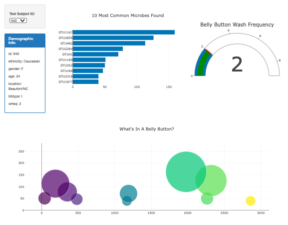
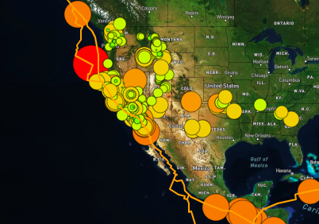
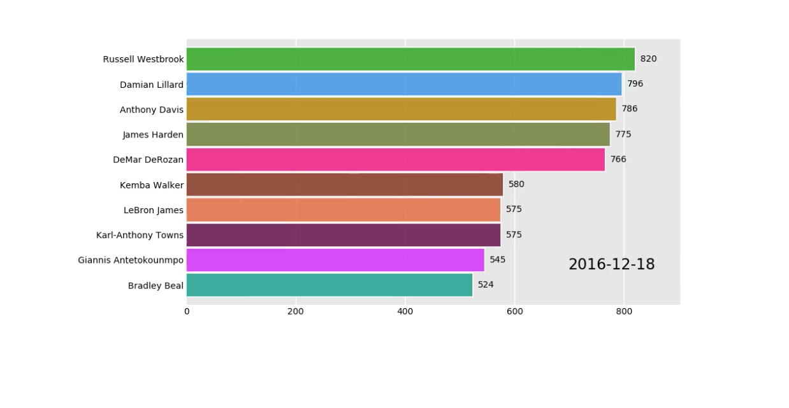
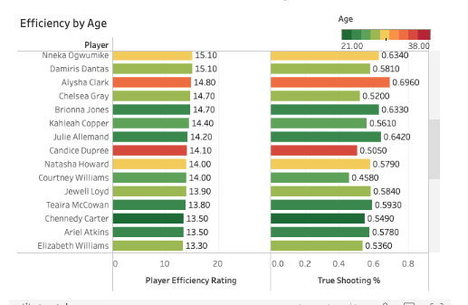
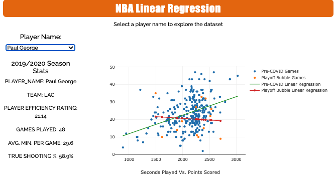
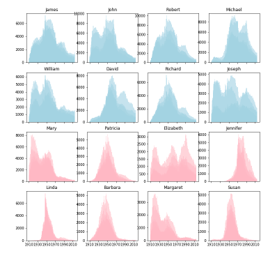
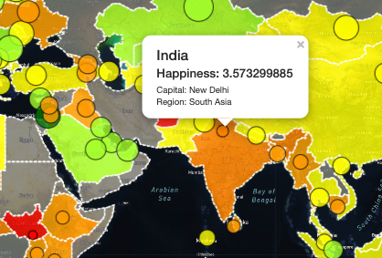
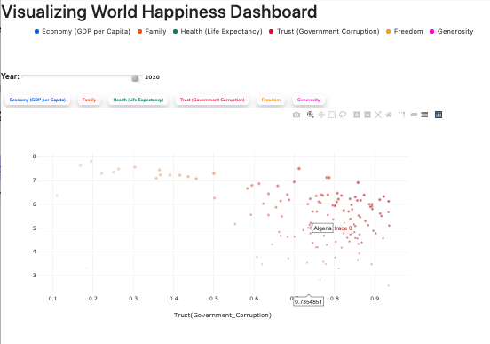

Scraping CDC data from every state to find new
correlations between health and lifestyle factors.

North Carolina State University's bellybutton study
I built an interactive dashboard based on the NCSU study
that catalogs the microbes that colonize human navels.

Mapping the world's earthquakes
I built an interactive, multilayer world map that indicates seismic activity
in the last week and tectonic plates by connecting a GeoJSON API using D3.

NBA's All-Time Point Scorers (Viz)
Created an animated bar chart that shows NBA player point tallies over five
years.

NBA, WNBA Player Efficiencies by Age, Shooting Potential
Used Tableau to find trends, insights between age and efficiency across top-50
WNBA and NBA.

Who Played Worse During Covid?
Created interactive linear regression charts of top-50 NBA and WNBA players,
comparing pre-Covid stats to 2020 season.

When Was 'Peak Jennifer'?
Analyzing and charting baby names by state, gender, uniqueness, and popularity from 1910 to 2010, using Python.

Visualizing World Happiness
Global chloropleth map with yearly transitions and capital markers from flask app that pulled country data to create overall "happiness" rank.

Happiness Trends Dashboard By Country
Built reactive scatterplot and line chart dashboard for breakout comparisons of how countries ranked in different "happiness" factors: GDP, life expectancy, freedom, trust in government, generosity.
Where I've Worked
Some favorites
Joe Walsh, Ringo Starr and the Mission to End America’s Addiction Crisis
Sarah Grant is a journalist with 10+ years of experience.
A recent graduate of Columbia University's data science program, she contributes data
analysis and consulting for music companies. She is also the founder of Sarah Grant Edits, a digital editing service that helps non-professional writers break into journalism.
Grant was the print editor of Billboard's music business section, "The Market." Previously,
she was the senior news editor at Rolling Stone. Grant began her career at Bloomberg LP,
first as a TV booker/producer for U.S. and U.K. programming, and then as a
business reporter where she was a frequent guest on Bloomberg Radio.
A lifelong music journalist, Grant has
also contributed music profiles, interviews and reviews to publications including: Rolling
Stone, the New York Times, Playboy, Billboard, Worth, PORT, SPIN, the Village Voice,
Pitchfork, and TIME. She has interviewed celebrities and music industry leaders at live events for Citigroup and various non-profit organizations.
Grant was a Writing Seminars major at Johns Hopkins University. She also did a stint in law
school and bicycled across the country. She lives in Brooklyn with a judgmental tuxedo cat.